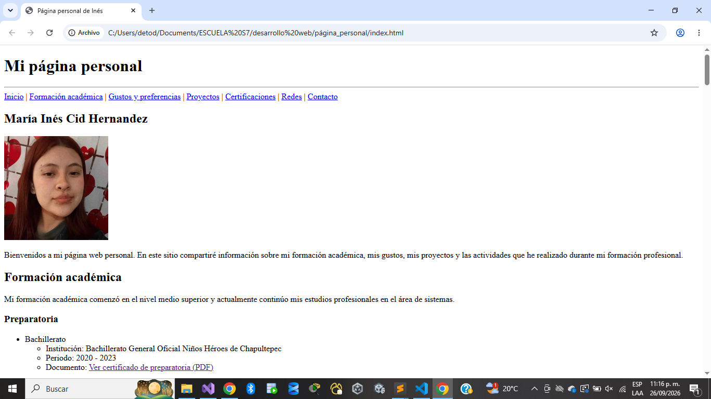
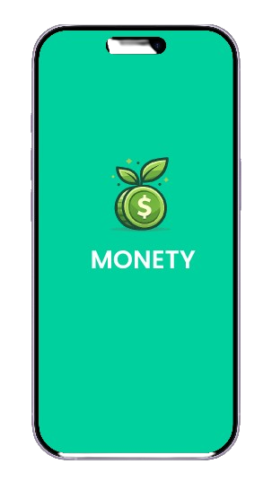
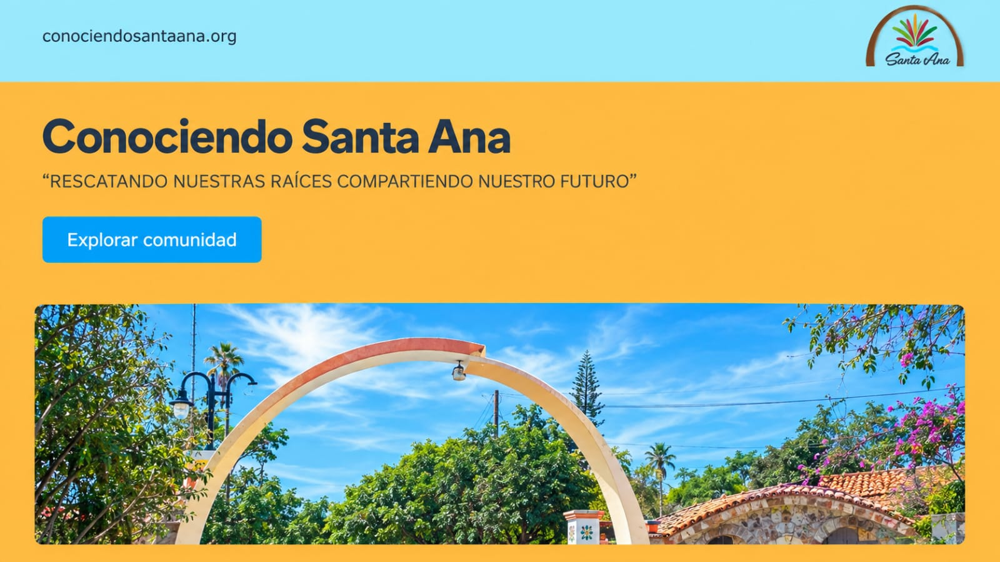
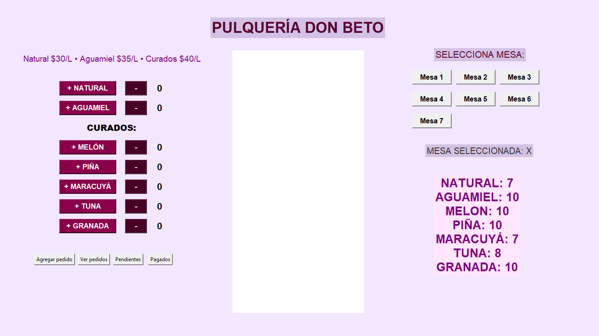
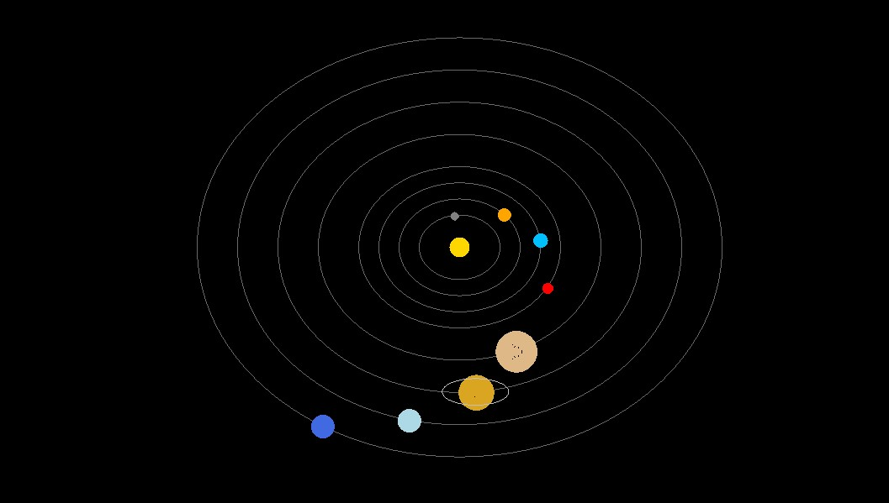
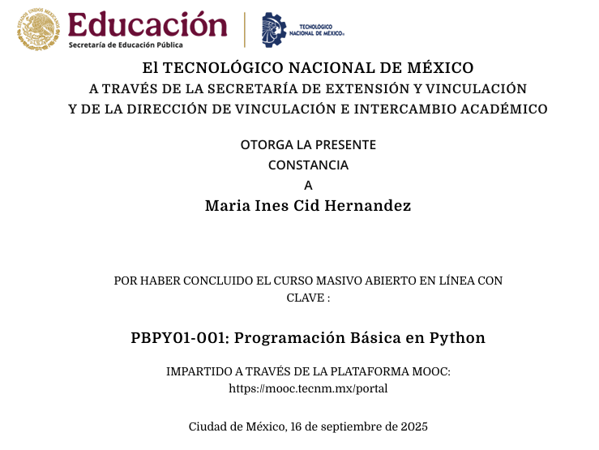

Proyecto 1: Página web personal

- Plataforma: Visual Studio Code
- Lenguaje: HTML5
- Área: Desarrollo web
- Descripción: Página web personal desarrollada utilizando HTML5 puro.
Bienvenidos a mi página web personal. En este sitio compartiré información sobre mi formación académica, mis gustos, mis proyectos y las actividades que he realizado durante mi formación profesional.
Mi formación académica comenzó en el nivel medio superior y actualmente continúo mis estudios profesionales en el área de sistemas.
En mi tiempo libre me gusta realizar diferentes actividades relacionadas con el entretenimiento, la música y la tecnología.
Continuar aprendiendo desarrollo de aplicaciones y desarrollo web.
A lo largo de mi formación en Ingeniería en Sistemas Computacionales he realizado diferentes proyectos relacionados con programación, desarrollo web, y aplicaciones.





Mis proyectos y códigos pueden consultarse en mi repositorio de GitHub.

| Proyecto | Plataforma | Lenguaje | Área |
|---|---|---|---|
| Página web personal | VS Code | HTML5 | Desarrollo web |
| Conociendo Santa Ana | WordPress | No aplica | |
| MONETY | Figma | No aplica | Aplicaciones móviles |
| Pulquería Don Beto | VS Code | Python | Aplicaciones de escritorio |
| Sistema solar | Windows Forms | C# | Programación gráfica |
| Total de proyectos registrados: 5 | |||
Durante mi formación académica he participado en cursos y actividades que complementan mis conocimientos y habilidades profesionales.
A continuación se muestran algunas evidencias de los cursos y constancias obtenidos durante mi formación.

Como parte de mi formación profesional en Ingeniería en Sistemas Computacionales, utilizo diferentes plataformas para almacenar mi código, conectar con la comunidad y compartir el proceso de desarrollo de mis proyectos.
Plataforma donde almaceno, gestiono y comparto el código fuente de mis proyectos académicos y personales.
Red social profesional donde publico actualizaciones sobre mi trayectoria académica, aprendizajes y logros en desarrollo de software.
Espacio donde comparto videos cortos con demostraciones del funcionamiento de mis aplicaciones, avances de proyectos y mi experiencia en programación.
Si deseas comunicarte conmigo, puedes hacerlo mediante mi correo electrónico.
Puedes utilizar este formulario para dejarme un comentario, realizar una pregunta o compartir alguna sugerencia.